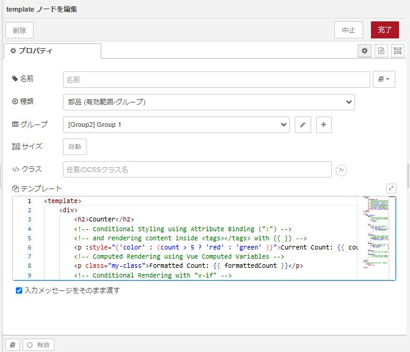
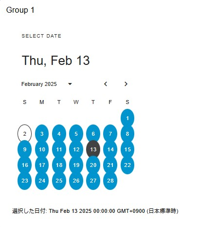
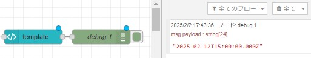

従来良く使われていた node-red-dashboard（ダッシュボードノード）は、 Angular を使用した WEB UI です。
Angular は開発が終了しており、 Dashboard をアップグレードする取り組みの一環として、 FlowFuse によって Dashboard 2.0 が開発されています。
今後は、 Dashboard 2.0 が標準になっていくと思われます。
Dashboar 2.0 は、 Vue.js v3.0 ／ Vuetify（マテリアル デザイン コンポーネント フレームワーク）などで作られています。
インストール方法と「template」ノードについて簡単に説明します。
他の「button」「text input」「slider」などは直感的に扱えると思いますが、「template」ノードに関しては大幅に記述方法が変わっているからです。
インストール方法
「.node-red」フォルダで、
> npm install @flowfuse/node-red-dashboardもしくは、
Node-RED の右上のバーガーボタン ⇒ 「パレット管理」 ⇒ 「ノードを追加」 ⇒ 「ノードを検索」で「@flowfuse/node-red-dashboard」 ⇒ [ノードを追加]ボタンをクリックしてください。
「template」ノードについて
カスタムなダッシュボードを作成することができます。
.vue ファイルの形式でコードを記述します。
.vue ファイルは、 Vue.js で使われる シングルファイルコンポーネント（SFC: Single File Component）のことで、1つの .vue ファイルに HTML／ CSS／ JavaScript をまとめて書けるのが特徴です。
Node-REDの「template」ノードとはとても相性が良さそうです。
「template」ノードを新規作成すると、テンプレートには以下のような例が表示されています。（2025年1月、Version 1.21.0）

<template>
<div>
<h2>Counter</h2>
<!-- Conditional Styling using Attribute Binding (":") -->
<!-- and rendering content inside <tags></tags> with {{ }} -->
<p :style="{'color' : (count > 5 ? 'red' : 'green' )}">Current Count: {{ count }}</p>
<!-- Computed Rendering using Vue Computed Variables -->
<p class="my-class">Formatted Count: {{ formattedCount }}</p>
<!-- Conditional Rendering with "v-if" -->
<b v-if="count > 5">Too many!</b>
<v-btn @click="increase()">Increment</v-btn>
</div>
</template>
<script>
export default {
data() {
// define variables available component-wide
// (in <template> and component functions)
return {
count: 0
}
},
watch: {
// watch for any changes of "count"
count: function () {
if (this.count % 5 === 0) {
this.send({payload: 'Multiple of 5'})
}
}
},
computed: {
// automatically compute this variable
// whenever VueJS deems appropriate
formattedCount: function () {
return this.count + ' Apples'
}
},
methods: {
// expose a method to our <template> and Vue Application
increase: function () {
this.count++
}
},
mounted() {
// code here when the component is first loaded
},
unmounted() {
// code here when the component is removed from the Dashboard
// i.e. when the user navigates away from the page
}
}
</script>
<style>
/* define any styles here - supports raw CSS */
.my-class {
color: red;
}
</style>試してみます。
「template」ノードは、1ファイル（ .vue）でコンポーネントを作成する形式のコードを採用しているので、ChatGPTで「Vue.jsで～したい」「Vuerifyで～したい」と質問すれば、良さげなコードを教えてくれます。
Version 1.21.0では「Date Picker」がありません。
ChatGPTに「VuetifyでDate Pickerを作って」と聞いてみると、以下のようなコードを教えてくれました。
<template>
<v-container>
<v-date-picker v-model="selectedDate"></v-date-picker>
<p>選択した日付: {{ selectedDate }}</p>
</v-container>
</template>
<script>
export default {
data() {
return {
selectedDate: null
};
}
};
</script>これを「template」ノードに入力しデプロイすると以下のような Date Picker が表示されました。

更にChatGPTに「selectedDataが選択された時にスクリプトを実行したい時はどうする？」と聞いたら答えてくれました。
<script> 内で、 this.send({payload: [値]}) を実行すると次のノードに値を送ることができるのでそれも利用します。
<template>
<v-container>
<v-date-picker v-model="selectedDate"></v-date-picker>
<p>選択した日付: {{ selectedDate }}</p>
</v-container>
</template>
<script>
export default {
data() {
return {
selectedDate: null
};
},
watch: {
selectedDate(newValue, oldValue) {
this.send({payload: newValue})
}
}
};
</script>以下のように、「debug」ノードをつないで試してみるとうまくいきました。
